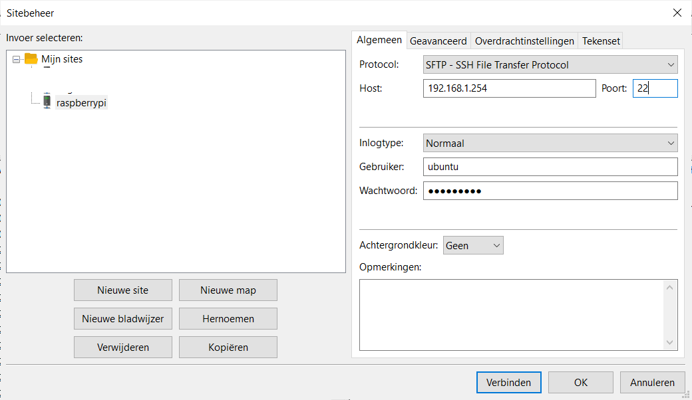
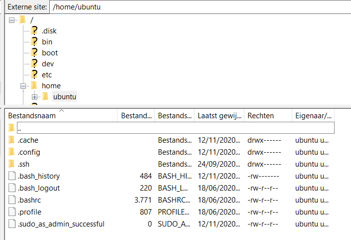

De protocollen HTTP, SMTP en SSH dienen allemaal om informatie uit te wisselen tussen computers en/of gebruikers achter die computers.
Bij FTP is dat niet anders maar hier ligt de focus op het overdragen van files (= bestanden). FTP bestaat al sinds 1971 en er is altijd sprake van een FTP server en een FTP client.
De poort waarop de FTP server werkt is 21 en het protocol is, logischerwijze, TCP omdat we een gegarandeerde en volledige overdracht willen van pakketten.
Standaard is FTP niet voorzien van encryptie waardoor je met Wireshark de FTP gebruikers en wachtwoorden makkelijk kan onderscheppen. Om deze reden is er SFTP, het SSH File Transfer Protocol. Let op de naam: SFTP is geen beveiligde FTP maar een ander protocol, dat over SSH loopt. Wat wel FTP met een beveiligingslaag is, heet FTPS.
Bij SFTP werkt de server dan volledig over SSH waardoor je enkel een SFTP client nodig hebt. Dit is bijvoorbeeld filezilla.
Het enige wat je in dat programma moet doen is SFTP aanduiden, het IP adres van de server ingeven en aanmelden. Je kan dat makkelijk eens zelf testen met bijvoorbeeld een Raspberry PI.

